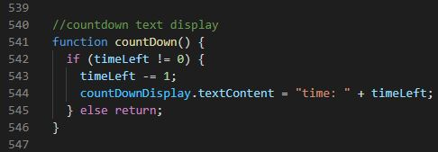

I temaopgaven skulle vi kode et simpelt spil med HTML, CSS og
JavaScript, hvor man kan klikke på en god ting og en dårlig ting.
Opgavens fokus er at bruge css animationer og javascript til at gøre
spillet interaktivt. Alt fra kode til grafik skulle vi selv lave til
spillet.
Min rolle
Min rolle var at lære javascript og karakterdesign ved at kode et
spil med lidt storytelling.
Hvad jeg lærte
Gennem temaet har jeg lært spiludviklingsprocessen fra lo-fi
prototype med paperprototype og sketch af karaktere, til
idégenereringsmetoder, til aktivitetsdiagram og statemachinediagram
og til kodning af spillet. Jeg lærte at tilføje og fjerne klasser
med javascript, javascript funktioner, metoder og hierarkiet af
if/else betingelser. I opgaven
16-animationer
har jeg lært at animere med css animationer. Paperprototypen skulle
i virkeligheden være lavet med lim, saks og sticky notes for at
illustrere konceptet, men jeg havde dem ikke tilgængeligt.
Jeg har kodet og designet spillet Hungry Lola, som går ud på
at du skal fodre katten ved at fange fisk ude på en havn på 60
sekunder. Spillet handler om at du ejer en sulten kat, som skal
spise en stor mængde fisk, men katten er bange for søpølser og
bliver skræmt, hvis man fanger en.
I spillet tjener du 2 point for at fange en fisk, men mister et hvis
man ikke når at fange fisken. Derudover mister man 5 point og et
liv, hvis man fanger en søpølse.
Min proces
I idégenereringsprocessen brugte jeg krydsmetoden, som går ud på at
man forbinder et ord sammen fra hvert gruppe af ord (verber,
setting, ting). Jeg rentegnede karaktererne i Adobe Illustrator og
eksporterede filerne i .svg format. Processen af rentegning kan
findes
her.
Da vi endelig skulle i gang med at kode spillet trin for trin,
tilføjede jeg ekstra features i spillet når jeg blev hurtig færdig
med opgaverne, for eksempel at vise tiden med tal udover en bar der
gradvist blev mindre med css animationer.

Javascript funktion af tid
Det gjorde jeg ved at lave en css animation med en
animation-iteration på 60 og animation-duration på 1 sekund på en
element, hvorpå jeg i min javascript lavede en event listener på
animationiteration, der kalder på funktionen i illustrationen
ovenover. Variablen timeLeft startes med en værdi på 60, der
tæller ned hver gang funktionen bliver kaldt.